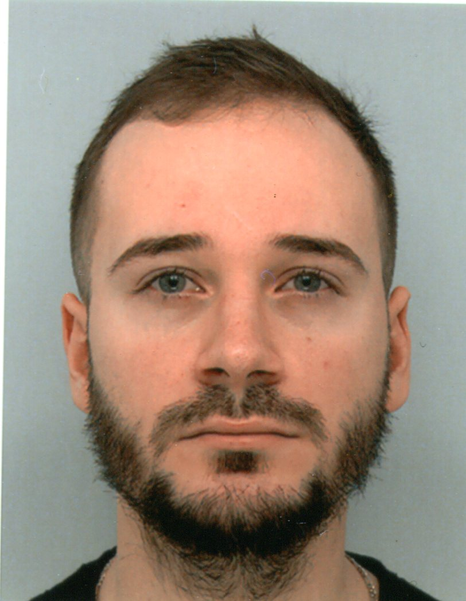

Samuel Ciscar
En reconversion professionnelle
Développeur web junior
samuelciscar@gmail.com
15 rue des 4 coins, 11700 Azille
07 86 43 33 81
Ceci est un test de type CV ou carte de visite. Clique sur ma photo pour une surprise.